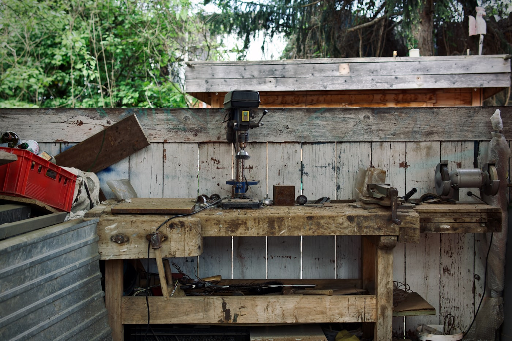

Worum es hier geht
- PC- und Laptop-Reparaturen
- Hard- und Software-Upgrades
- Datenrettung und Datenübernahme
- Beratung mit ehrlicher Einschätzung
PC-Service in Köln-Mülheim
Pixel & Parts unterstützt Privatkunden und kleine Unternehmen bei Reparaturen, Aufrüstung, Datenrettung und technischer Beratung. Im Mittelpunkt stehen eine saubere Diagnose, eine ehrliche Einschätzung und Lösungen, die im Alltag wirklich weiterhelfen.

Werkstattblick
Ob langsamer Rechner, Hitzethema oder anstehendes Upgrade: Vor jedem Schritt wird geprüft, was technisch sinnvoll ist und was du dir sparen kannst.
Kurzüberblick
Leistungen, Ablauf, häufige Fragen und Kontaktwege sind klar getrennt, damit du schnell beim passenden Thema landest.
Fehlerdiagnose, gezielte Instandsetzung und ein klarer Blick auf Temperatur, Stabilität und Hardwarezustand.
SSD, RAM, Systempflege und sinnvolle Modernisierungen, die Geschwindigkeit und Zuverlässigkeit spürbar verbessern.
Sichern, retten und übertragen, bevor bei Defekten, Neuinstallationen oder Gerätewechseln etwas verloren geht.
Christliche Werte
Pixel & Parts ist bewusst von christlichen Werten geprägt. Das zeigt sich nicht in lauten Symbolen, sondern in fairen Empfehlungen, respektvollem Umgang und Hilfe dort, wo Technik im Alltag wirklich belastet.
01
Vor Reparatur oder Upgrade wird offen eingeschätzt, ob der Schritt technisch und wirtschaftlich wirklich sinnvoll ist.
02
Jede Anfrage wird ruhig, direkt und ohne herablassenden Technikton behandelt, egal ob es um einen kleinen Fehler oder einen größeren Ausfall geht.
03
Bei gefährdeten Systemen stehen Sicherung, Wiederherstellung und ein vorsichtiger Umgang mit sensiblen Inhalten an erster Stelle.
Vor jedem Schritt wird geprüft, ob Reparatur, Upgrade oder Ersatz wirklich sinnvoll ist. So entstehen nachvollziehbare Entscheidungen statt unnötiger Kosten.
Anfragen können strukturiert über das Formular oder direkt per E-Mail, Mobil oder WhatsApp gestellt werden. Dadurch bleibt der Kontakt einfach und schnell.